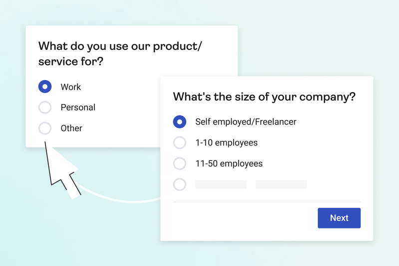
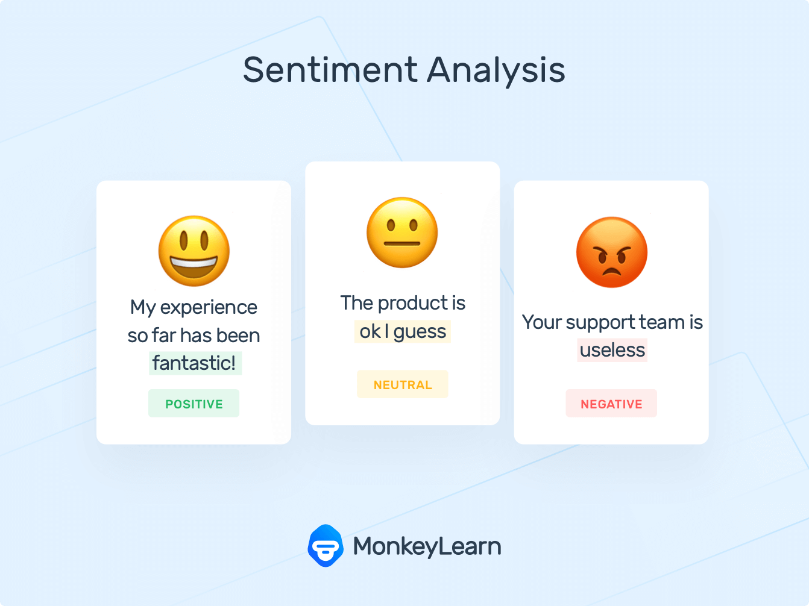
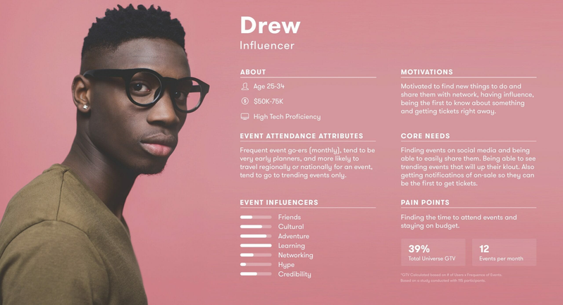
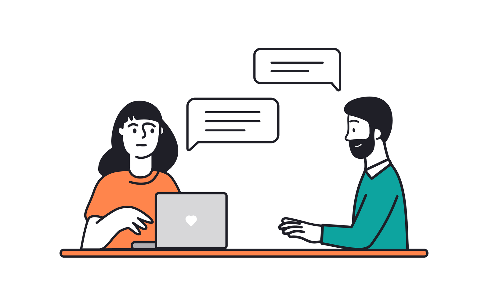
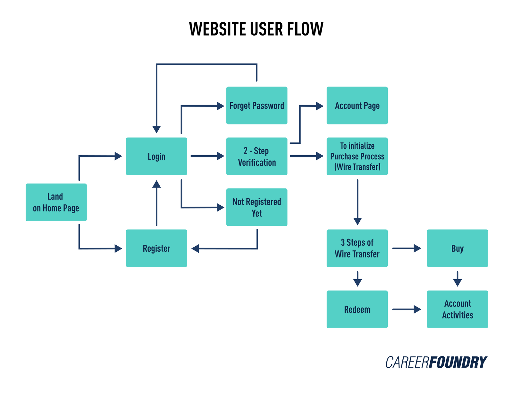
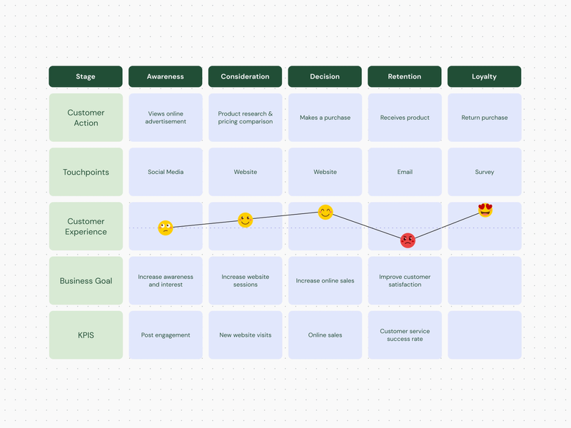
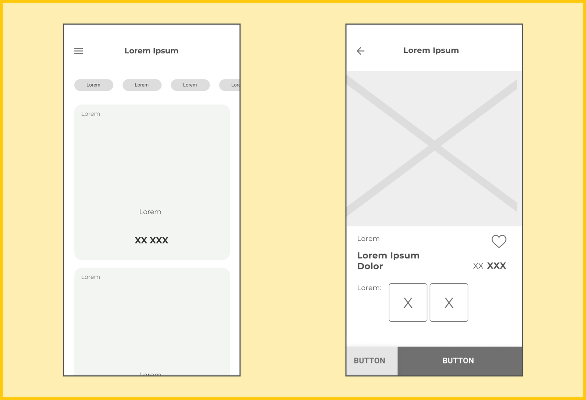
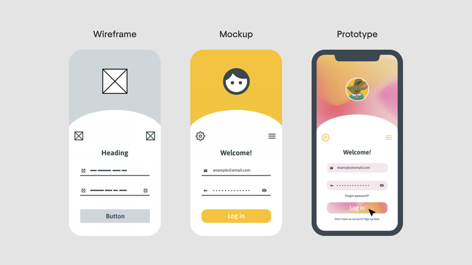
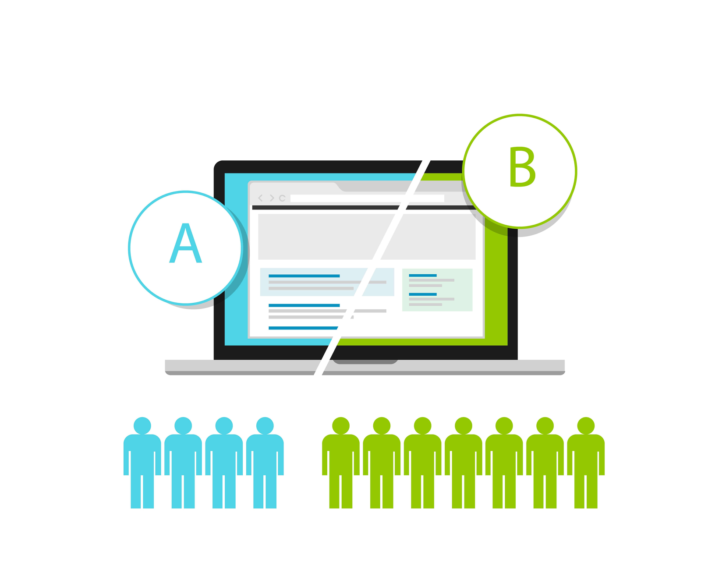

PROGETTAZIONE
FOCALIZZATA
SULL'UTENTE:
Un approccio necessario
per il Successo del Software
Nel mondo dello sviluppo software, lo User-Centered Design (UCD) è una
metodologia fondamentale per garantire che un prodotto risponda
realmente alle esigenze degli utenti. Non si tratta solo di una
questione estetica o di scelte cromatiche, ma di un approccio continuo
e strutturato che guida ogni fase della progettazione. Il design, in
questo contesto, non è un semplice abbellimento aggiunto alla fine di
un progetto, ma un processo costante di decisioni su ogni singolo
aspetto del prodotto. L'idea alla base dell'UCD è chiara: progettare
un sistema per le persone reali, coloro che lo utilizzeranno
concretamente. Per farlo, è essenziale dialogare direttamente con
loro, osservare il loro lavoro, comprendere i problemi che affrontano
e costruire soluzioni che migliorino davvero la loro esperienza. Una
volta sviluppata una prima versione, questa viene testata con gli
utenti, verificando che risponda alle loro necessità. Il processo non
si esaurisce qui, ma si ripete ciclicamente, migliorando il sistema in
modo progressivo e continuo.
Se un software non viene progettato con e per gli utenti, il rischio è
quello di costruire un prodotto destinato a persone immaginarie, con
il risultato di generare un enorme spreco di tempo e risorse. Questo
problema è evidente in molti progetti IT governativi, dove sistemi
costosi e complessi finiscono per essere poco utilizzabili e
inefficienti. Al contrario, le aziende più all'avanguardia nel settore
dello sviluppo software investono in ricerca sugli utenti quasi quanto
nello sviluppo stesso. Questo perché senza un'adeguata comprensione
delle esigenze reali, il software diventa un salto nel buio, con il
pericolo di produrre strumenti inutili o difficili da adottare.
Un principio cardine dell'UCD è che il software non nasce perfetto, ma
deve evolversi continuamente. Un sistema ben progettato non si basa
esclusivamente su documenti di requisiti statici, ma su un dialogo
costante con gli utenti finali. Ascoltare, osservare, testare e
adattare il prodotto è il metodo più efficace per garantire che esso
risponda alle esigenze per cui è stato creato. Senza un approccio
centrato sulle persone, il rischio di fallire è elevatissimo, portando
a risultati inefficaci e, spesso, a costi insostenibili.
Strumenti
e Tecniche per un
Design Centrato
sull'Utente
Come raccogliere e utilizzare i dati per migliorare l'esperienza
utente e ottimizzare il design dei prodotti digitali.
USER SURVEY
Questionari rivolti agli utenti per raccogliere dati quantitativi e
qualitativi sulle loro esigenze, abitudini, preferenze e problemi.
Aiutano a validare ipotesi di design e a ottenere insight su larga
scala.

SENTIMENT ANALYSIS
Tecnica di analisi dei dati (spesso basata su AI e NLP) che valuta
le emozioni e le opinioni espresse dagli utenti su un prodotto,
servizio o esperienza. Utile per comprendere il tono delle
recensioni, il feedback e la percezione del brand.

USER PERSONAS
Rappresentazioni fittizie basate su dati reali degli utenti target,
con dettagli su comportamento, motivazioni, bisogni e obiettivi.
Servono per progettare esperienze più mirate e personalizzate.

USER INTERVIEW
Interviste dirette con gli utenti per raccogliere insight
dettagliati sulle loro esperienze, bisogni e punti di frustrazione.
Sono utili per scoprire problemi nascosti e ottenere feedback
qualitativo approfondito.

USER FLOW
Diagrammi che rappresentano i percorsi compiuti dagli utenti
all'interno di un'app o sito web per completare un obiettivo.
Aiutano a ottimizzare la navigazione e a ridurre frizioni nel
processo.

JOURNEY MAP
Mappa che visualizza il percorso dell’utente nel tempo, includendo
touchpoint, emozioni e frustrazioni. Serve per identificare
criticità e opportunità di miglioramento nell’esperienza
complessiva.

WIREFRAME
Bozze schematiche di un’interfaccia che rappresentano la struttura e
la disposizione dei contenuti senza concentrarsi su dettagli
grafici. Utili per testare il layout e l'usabilità in fasi
preliminari.

PROTOTIPI
Versioni interattive di un prodotto (da semplici click-through a
simulazioni avanzate) che permettono di testare e iterare il design
prima dello sviluppo.

A/B TEST
Test comparativi tra due o più varianti di una pagina, funzione o
layout per determinare quale performa meglio in base a metriche
definite (conversioni, click, tempo di permanenza, ecc.)
